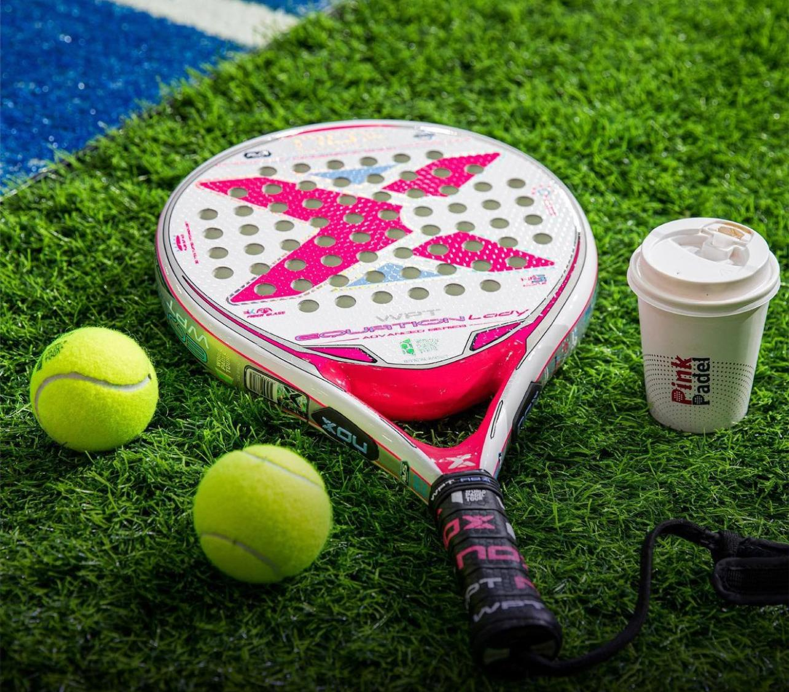
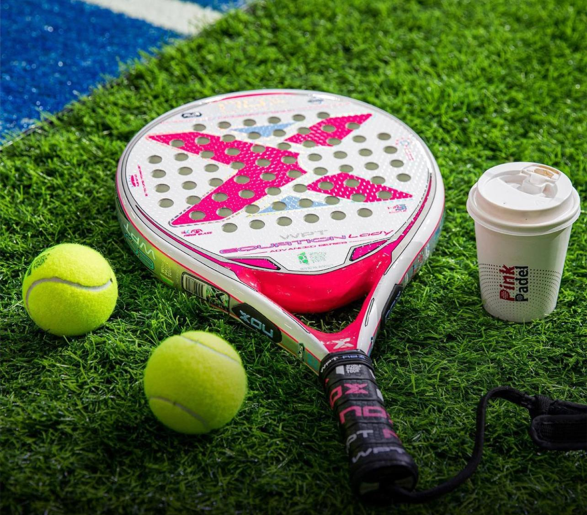

Hobbies
What is a hobby ???

 


A hobby is a regular activity that is done for pleasure, usually in one's spare time. Collecting themed things and objects, engaging in creative and artistic endeavours, playing sports, and indulging in other amusements are all examples of hobbies.
A list of hobbies evolves throughout time as new interests and fads emerge, making it diversified and extensive. Hobbies tend to follow societal trends; for example, stamp collecting was popular in the nineteenth and twentieth centuries when postal networks were the primary mode of communication, but video games are more popular now as a result of technology advancements. Workers in the nineteenth century had more spare time thanks to advancements in manufacturing and technology. As a result, people's attempts to invest in hobbies have risen throughout time.
Hobbies can be divided into three types:
- Casual leisure: This is an intrinsically rewarding
- Short-term: Pleasurable activity that requires little or no preparation
- Serious leisure: This is the systematic pursuit of an amateur, hobbyist, or volunteer that is substantial, rewarding, and results in a sense of accomplishment, and project-based leisure, which is a short-term, often one-off project that is rewarding.